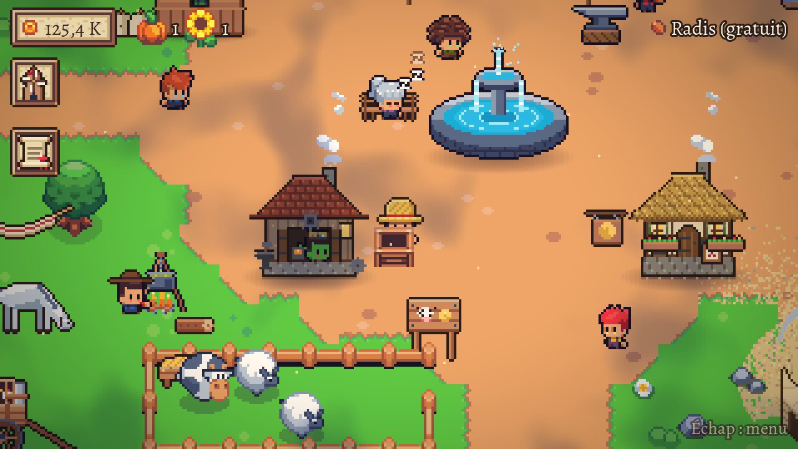
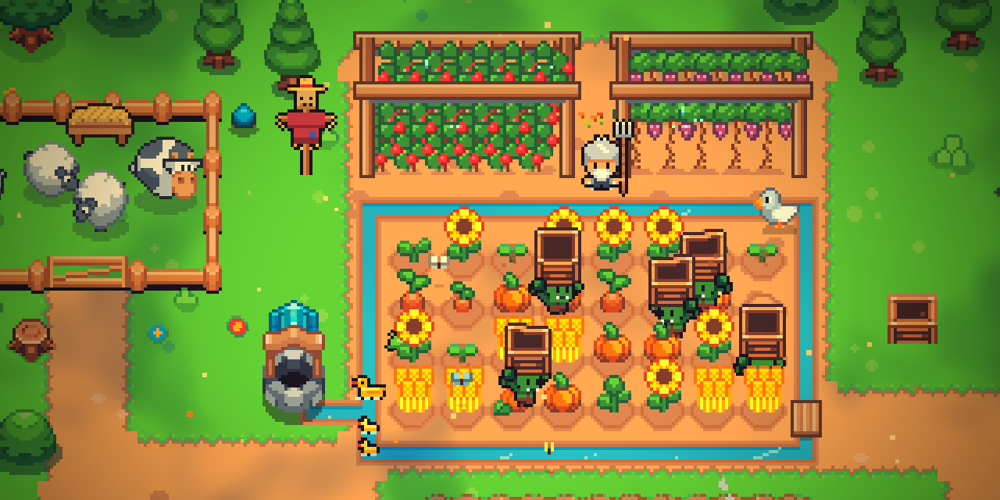
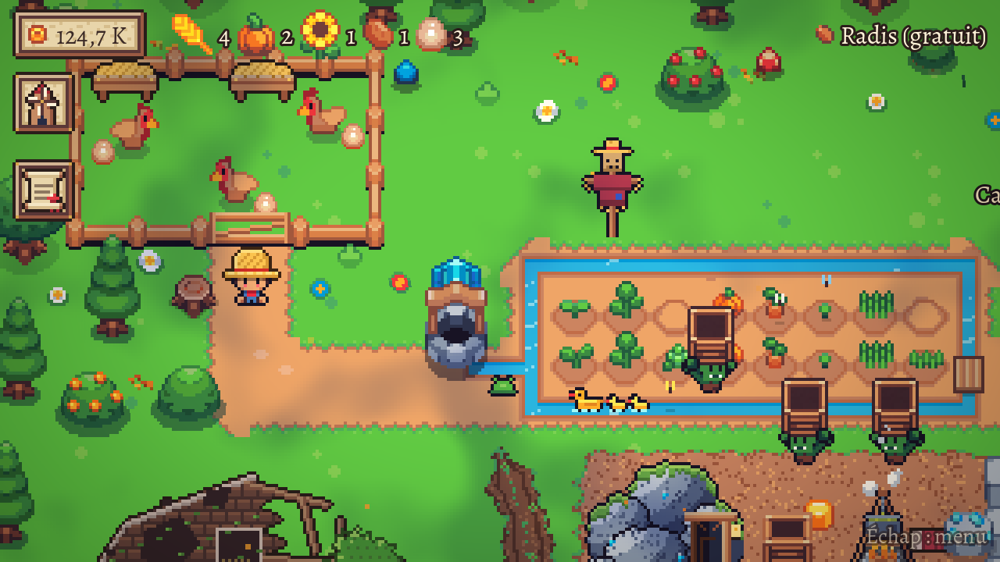
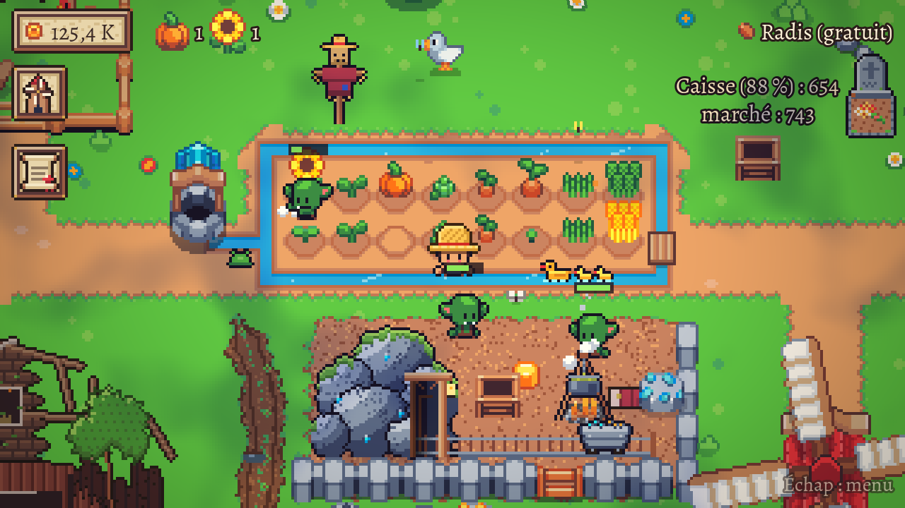

A village coming back to life
Grandma dozing on her bench, the blacksmith at his anvil, the washerwoman, the bard… And one fine day, Barnabé the breeder rolls in with his cart and his animals.
Cozy incremental game · Pixel art
Your grandfather's farm is waiting. Bring it back to life.
Plant, harvest, hire goblins who work for a bowl of soup, then be reborn stronger with golden seeds. A farm that never stops growing.

Once upon a time in Blémont
Farmers sowed golden seeds there, entrusted to them by an old sage. Then came the storm. Years later, John returns to his grandfather's land: a ruined farm, a goblin asleep by the fire, and a letter.
Rebuild the farm, bring the village back to life… and find out what the old sage really knows about the golden seeds.
How it plays
Radishes, wheat, pumpkins, sunflowers, potatoes… Every new seed earns more than the last.
Hire goblins from the mine: they harvest and replant for you, even while you're away.
Sprinkler, mill, animal pen, egg-laying hens: every upgrade changes the way you play.
When the old sage calls, start over keeping your unlocked seeds, with golden seeds and permanent bonuses. Every run goes further, and faster.

Grandma dozing on her bench, the blacksmith at his anvil, the washerwoman, the bard… And one fine day, Barnabé the breeder rolls in with his cart and his animals.

Fix the old pen, buy hens from Barnabé and lead them to your farm yourself. They lay non-stop, and their eggs sell well at the market.

The ditch fills up, the mill turns, the goblins get busy and soup simmers at the camp. Take a break: your harvest will be waiting.
Gallery
Free, right now
About two hours of play, three rebirths and Barnabé's arrival. Nothing to install, and your progress is saved automatically.
It's free and takes ten seconds. For a small indie game, it's what matters most: every wishlist helps the game get seen on Steam, and you'll be notified the day it launches.
Add to my Steam wishlistThe Steam page is coming very soon. Meanwhile, the demo is free to play!
A game where your income keeps growing: you reinvest to produce more, you automate, then you start over stronger. John'cremental adds a real farm to explore, characters and a story.
The game is in development. Wishlist it to be notified at launch; in the meantime, the demo is free to play.
Yes: your goblins harvest and your hens lay eggs while you're away, for up to two hours. Your harvest is waiting when you come back.
The full game is planned for PC (Steam). The demo runs right in your browser, with keyboard and mouse.
English, French, Spanish, German and Brazilian Portuguese, selectable from the game menu.
Yes, automatically, in your browser. Careful: in private browsing, or if you clear the site's data, your save is lost.